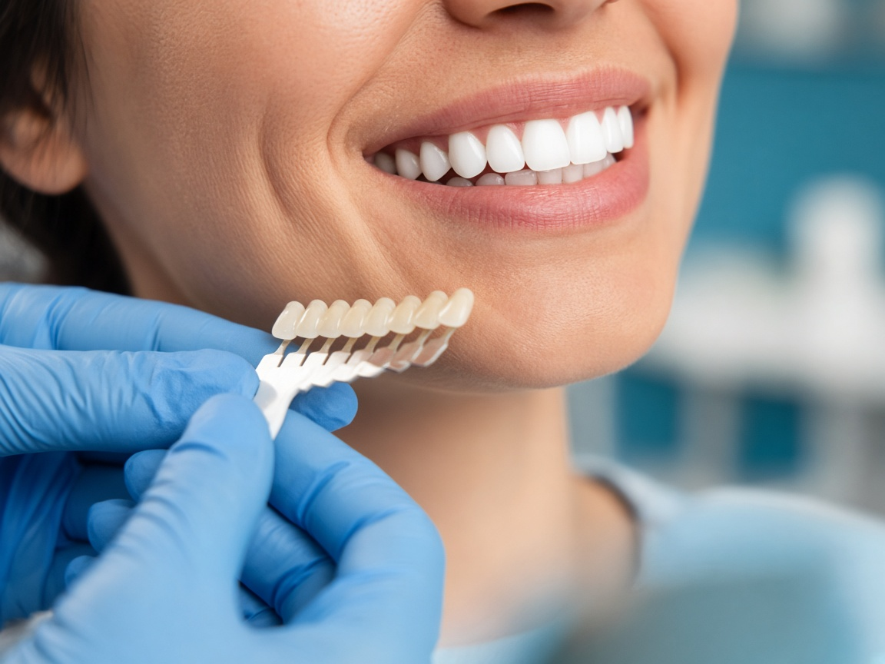

your smile deserves expert care
Dental Crowns & Bridges in Kondapur and Gachibowli
Home | Dental Crowns and Bridges
your smile deserves expert care
Home | Dental Crowns and Bridges
Dental Crowns and Bridges
Restoring damaged or missing teeth is essential for maintaining proper function, oral health, and the aesthetics of your smile. At Ekaa Dentistry in Gachibowli, we offer advanced dental crowns and bridges as part of our comprehensive restorative dentistry and cosmetic services. These treatments are designed to strengthen weakened teeth, replace missing teeth, and restore your smile with natural-looking, long-lasting results. A dental crown is a custom-made, tooth-shaped cap placed over a damaged or weakened tooth to restore its strength, shape, and appearance. In addition, dental bridges are utilized to replace one or more missing teeth by anchoring artificial teeth to adjacent natural teeth or dental implants, significantly enhancing chewing efficiency and boosting your smile confidence, especially for residents in Kondapur.
The dental crown procedure at Ekaa Dentistry in Gachibowli begins with a thorough clinical examination and digital evaluation. Dental crowns are commonly recommended for teeth that are fractured, severely decayed, worn down, or have undergone root canal treatment, providing protection against further damage. Additionally, for patients needing extensive tooth replacement, dental bridges might also be considered as part of restorative dentistry. The process includes:
Our crowns restore both the appearance and durability of your natural tooth while blending seamlessly with your smile in Kondapur.
Dental bridges are a highly effective solution for replacing one or more missing teeth, especially for residents in Gachibowli and Kondapur. A traditional dental bridge consists of artificial teeth, known as pontics, which are supported by dental crowns placed on adjacent natural teeth. This restorative dentistry treatment helps prevent surrounding teeth from shifting and restores proper bite alignment. For patients seeking a more stable and long-term solution, implant-supported bridges may be recommended. These bridges are securely anchored to dental implants, eliminating the need to modify neighboring teeth while offering superior stability, comfort, and longevity.
At Ekaa Dentistry in Gachibowli and Kondapur, all dental crowns and dental bridges are crafted using high-quality materials, including: Porcelain, Ceramic, and Zirconia. These materials provide excellent durability, biocompatibility, and a natural tooth-like appearance. Utilizing advanced digital imaging and precision technology, we ensure an accurate fit, comfort, and predictable results in our restorative dentistry services.
Maintaining dental crowns and dental bridges is simple with proper oral hygiene practices: regular brushing and flossing, routine dental check-ups and professional cleanings, and avoiding excessive force on restored teeth. In areas like Gachibowli and Kondapur, restorative dentistry emphasizes that with good care, dental crowns and bridges can last for many years, restoring not only function but also confidence in your smile.
Our experienced dental professionals in Gachibowli and Kondapur provide personalized restorative treatment plans that include options like dental bridges and dental crowns. We use advanced technology and premium materials to ensure ethical, patient-centered care. Our comprehensive services cater to all age groups, including specialized pediatric dentistry.
If you have damaged or missing teeth, expert restorative dentistry can help restore your smile and oral health. At Ekaa Dentistry in Gachibowli, we offer effective treatments such as dental crowns and dental bridges. Contact us today to learn more and book your consultation. 📞 Call us | 💬 WhatsApp for quick appointments | 📅 Book now
Call or Whatsapp us on +91 9030121100
Please reach us at +91 9030121100 if you cannot find an answer to your question.
What are dental crowns and bridges? Dental crowns and bridges are restorative dental treatments used to repair damaged teeth and replace missing teeth. A crown covers and protects a weakened or broken tooth, while a bridge fills the gap created by one or more missing teeth, restoring both function and appearance. At Ekaa Dentistry in Kondapur near Gachibowli, crowns and bridges are designed to restore tooth strength, chewing ability, and natural smile aesthetics.
When is a dental crown needed? A dental crown is recommended when a tooth is severely decayed, cracked, worn down, or after root canal treatment. Crowns strengthen the tooth, prevent further damage, and restore natural shape and bite alignment.
What are dental bridges used for? Dental bridges are used to replace one or more missing teeth. They help maintain facial structure, prevent neighboring teeth from shifting, improve chewing ability, and restore a complete smile.
What types of dental crowns are available at Ekaa Dentistry? Common types of dental crowns include:
The choice depends on tooth location, bite force, aesthetics, and durability needs.
What types of dental bridges are available near Gachibowli? Dental bridge options include:
Your dentist will recommend the best option based on your oral health and missing tooth location.
How long do dental crowns and bridges last? With proper care, dental crowns and bridges can last 10–15 years or longer. Maintaining good oral hygiene and regular dental check-ups at our Serilingampalle, Kondapur Clinic helps extend their lifespan.
Is the crown or bridge procedure painful? The procedure is generally painless as local anesthesia is used. Some mild sensitivity may occur after treatment, but it usually subsides within a few days.
How long does it take to place a dental crown or bridge? Placing a crown or bridge usually requires two visits. The first visit involves tooth preparation and impressions, and the second visit is for final placement once the custom restoration is ready.
How do I care for dental crowns and bridges? Care includes brushing twice daily, flossing regularly (especially around bridges), avoiding hard foods, and attending routine dental check-ups. Good oral hygiene ensures long-term success.
Are dental crowns and bridges better than implants? Crowns and bridges are effective restorative options, but dental implants may offer a more permanent solution. The best choice depends on bone health, budget, and individual dental needs. A dentist can guide you through the options. .
Can dental crowns look natural? Yes. Modern crowns made from porcelain, ceramic, or zirconia closely match natural tooth color, shape, and translucency, providing highly aesthetic results.
Who is a good candidate for dental crowns and bridges? Patients with damaged, weakened, or missing teeth who have healthy gums and sufficient supporting teeth or bone structure are ideal candidates for crowns and bridges.
Where can I get dental crowns and bridges near me? If you’re searching for dental crowns and bridges near you, Ekaa Dentistry offers advanced restorative dental solutions using high-quality materials and precision technology to restore your smile and oral function.
This content is reviewed by our Dental Specialists (Implantologists and Prosthodontists) with extensive experience in all such procedures .All types of prosthodontic treatment services are available at our Serilingampalle dental clinic near Gachibowli-Kondapur Corridor.
Ekaa Dentistry – Best Dental Clinic in Kondapur & Gachibowli Ekaa Dentistry is a trusted multispeciality dental clinic in Kondapur, Hyderabad, located near the Serilingampalle–Kondapur–Gachibowli corridor. If you are searching for a dentist near me, best dental clinic near Gachibowli, or a family dentist in Kondapur, our specialist-led team provides comprehensive and comfortable dental care for all age groups. Our services include general dentistry, cosmetic dentistry, root canal treatment, dental implants, braces and Invisalign, laser dentistry, pediatric dentistry, gum treatments (periodontics), oral and maxillofacial surgery, and in-house OPG X-ray diagnostics, ensuring accurate diagnosis and complete care under one roof. We proudly serve patients from Kondapur, Gachibowli, Serilingampalle, Masjid Banda, Hitech City, Madhapur, Hafeezpet, and nearby areas. With advanced dental technology, ethical treatment planning, and a strong focus on patient comfort, Ekaa Dentistry is committed to long-term oral health and confident smiles. 📍 Location: Serilingampalle, Kondapur, Hyderabad – Near Gachibowli
📞 Appointments: Call or book online at +91 9030121100
🕒 Timings: Mon–Sun | Specialist Consultations Available © 2026 Ekaa Dentistry. All Rights Reserved.
Powered by

